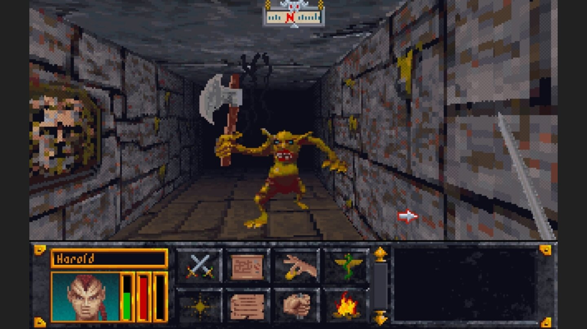

The Release of Arena
Released in 1994, The Elder Scrolls: Arena is the game that launched Bethesdas legendary open-world RPG series. Arena established many of the foundational elements fans recognize today—massive exploration, deep character customization, and a world shaped by player choice.
The Big Plot
The game's setting begins in Tamriel on the 389th year of the Third Era when Emperor Uriel Septim VII summons his advisor and Imperial Battlemage Jagar Tharn over concerns of betrayal from within the court. His concerns are justified when Tharn is revealed to be the traitor, magically trapping the Emperor and his general, Talin Warhaft, in another dimension. When Tharn proceeds to magically disguise himself as Emperor to usurp the throne, his conspiracy is witnessed by mage apprentice Ria Silmane, whom he murders before she can warn the Elder Council. Tharn then summons demon minions to replace the Emperor's Guard. In his disguise, he sends the player character, a court official and subordinate of General Warhaft, to die in the Imperial dungeons. After her death, Ria uses magic to take an incorporeal form. She holds herself together long enough to inform the imprisoned player of Tharn's betrayal and instructs them throughout their escape from the infamous dungeons. Past that point, she lacks the power to manifest physically and appears to the player during dreams. She creates a key to allow the player to escape the dungeons and teleports them to a different province through a mystical Shift Gate. The player is informed that the only way to stop Tharn is to get hold of the Staff of Chaos, which holds his life force. Tharn has split this staff into many fragments throughout the continent of Tamriel. Each time one is found, Ria appears to the player the next time they rest to provide the general location of the next fragment. At the end of the quest in 3E 399 (a decade after the start of the game), the player finds the final piece and reassembles the staff. This, however, does not release the Emperor, as all of the staff's power has been drained into the Jewel of Fire, an oversight by Ria. The player travels to the Imperial City to confront Tharn's minions, the player finds the Jewel of Fire and touches it with the Staff of Chaos, this destroys both the jewel and the staff as well as releasing the Emperor. The jewel also turned out to be where Tharn had stored his life force, and the destruction of the jewel resulted in his death. As a token of respect and gratitude, Uriel Septim grants the player the title of Eternal Champion, and Ria Silmane finally enters the afterlife.
Gameplay
The game is played from a first-person perspective. Melee combat is performed by right-clicking the mouse and dragging the cursor across the screen to attack as if swinging a weapon. Magic is used by cycling through a menu found by clicking the appropriate button on the main game screen, then clicking the spell to be used, and its target. The game's world is infinite. While the game's manual claims that the player can walk from one village to another, in actuality it is infinite and requires fast travel to get between towns. This is achieved by combining procedurally generated content and specifically designed world spaces to create a realistic and massive wilderness, where one may find inns, farms, small towns, dungeons, and other places of interest. The towns contain developer-designed buildings and shops, but the order in which these appear and their names are procedurally generated. There are several hundred dungeons and 17 specially designed dungeons for the main quest. Arena is notable for being one of the first games to feature a realistic day/night cycle, where at sunset shops close and people clear the streets before the monsters arrive and roam around until morning. This soon became a staple feature of most open-world games. In addition to the main quest, which is completed by beating all seventeen dungeons and finding pieces of the staff, small side quests also appear. These are often found by asking around town for rumours. These quests are usually very simple, such as delivering a parcel or defeating a randomly chosen dungeon. Arena has been noted for its tendency to be unforgiving towards new players. It is easy to die in the starting dungeon, as powerful enemies can be encountered if the player lingers too long. This effect gradually disappears as the player becomes more powerful and more aware of the threats that loom everywhere.